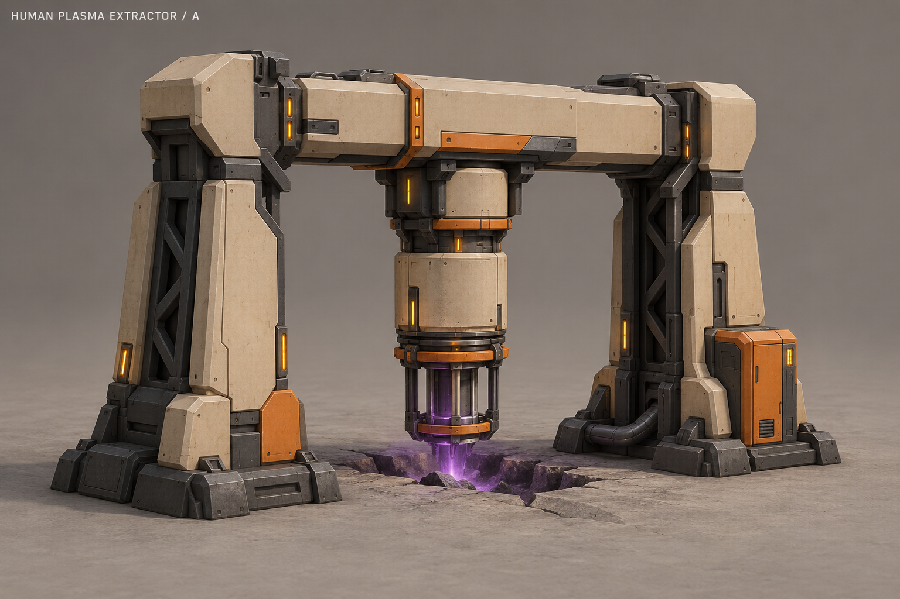
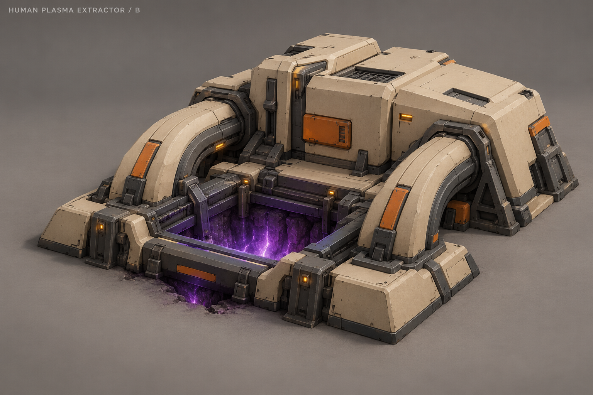
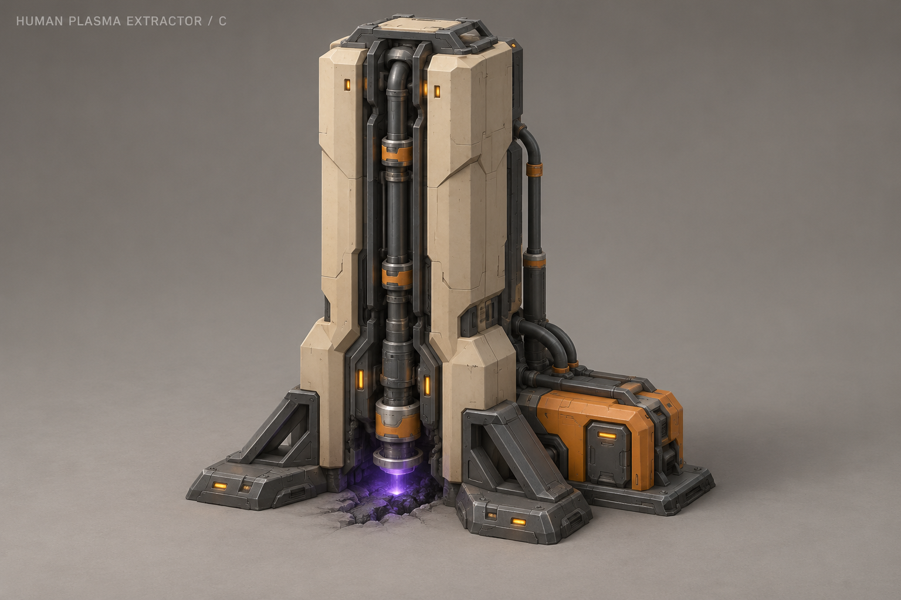
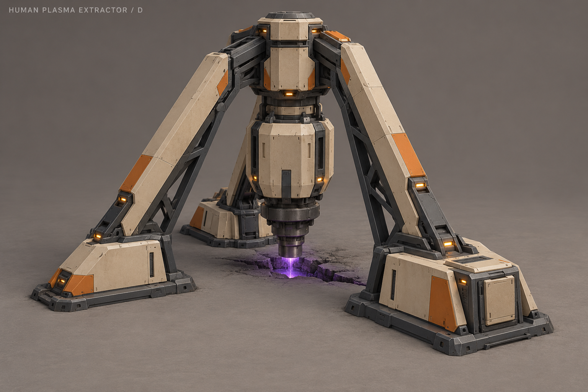
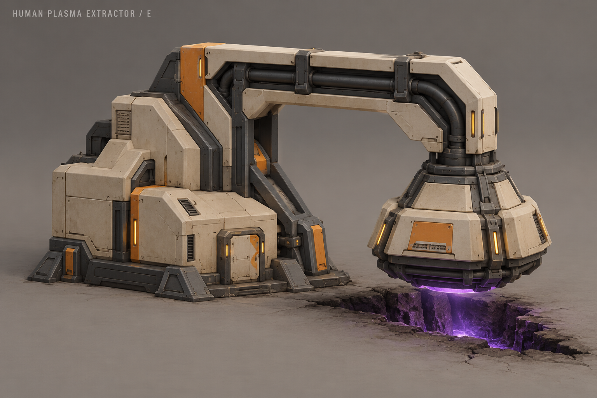
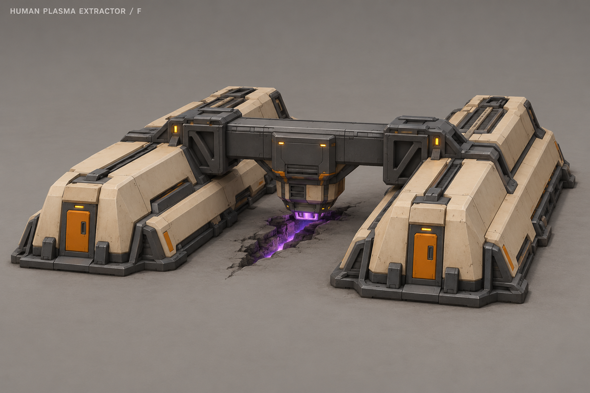
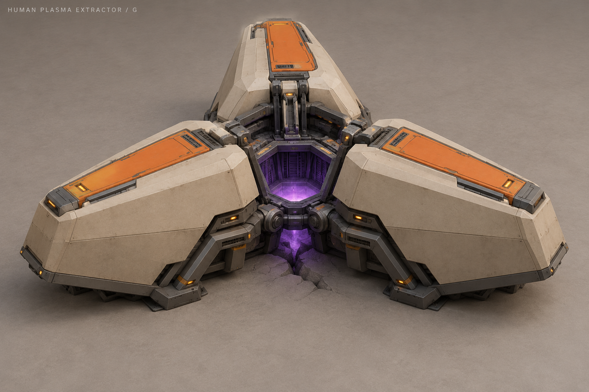
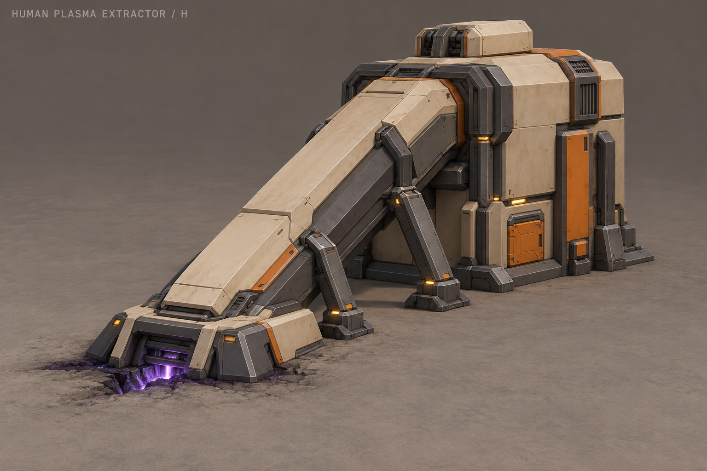

A «Портал»
Портальная рама с центральной заборной головкой.

B «Колодец»
Низкий насосный блок и квадратный заборный колодец.

C «Стойка»
Вертикальная насосная колонна с каналом забора.

D «Тренога»
Головка на трёх жёстких опорах над разломом.

E «Консоль»
Боковой машинный блок и консольная заборная головка.

F «Мост»
Низкий мост между двумя опорными корпусами.

G «Сегменты»
Три клиновидные секции вокруг центрального заборника.

H «Наклон»
Наклонный закрытый канал от разлома к машинному блоку.